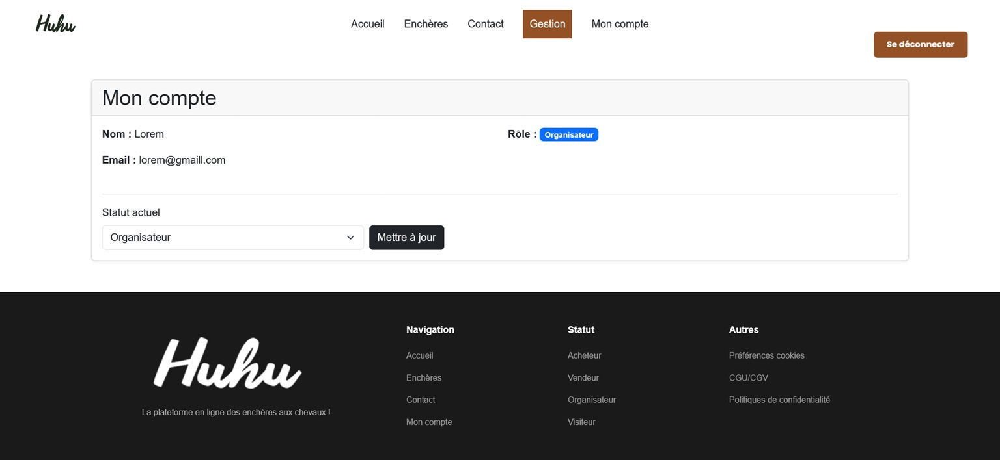
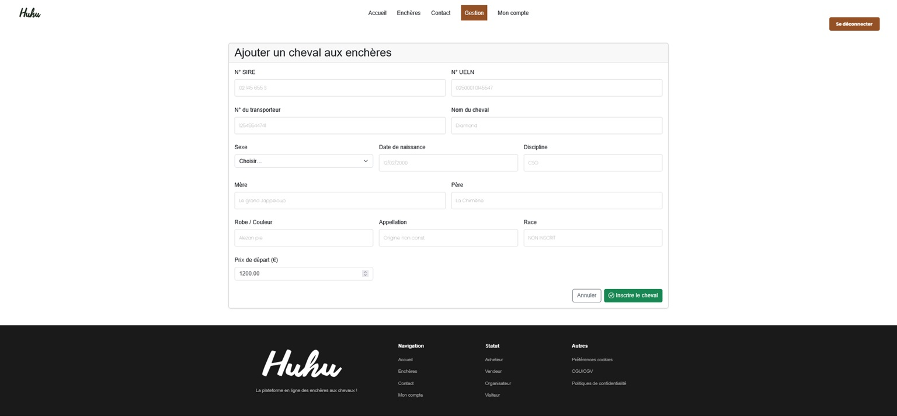
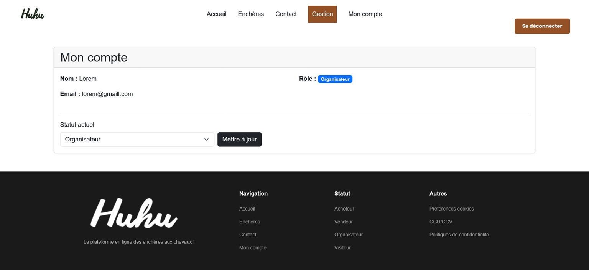
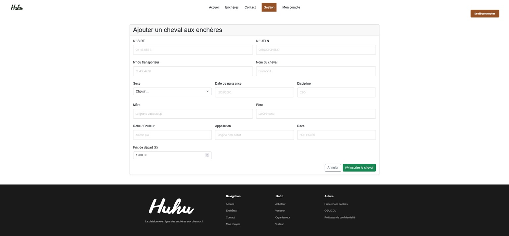

sites web landing page applications mobiles
Developpeuse full stack passionnée

Developpeuse full stack passionnée

Conception et intégration d'une landing page vitrine pour le projet ACME, avec un focus sur l'ergonomie, la clarté du message et l'optimisation de l'expérience utilisateur.

Projet d'entraînement consistant à reproduire fidèlement l'interface et la structure d'un site web existant, dans le but de renforcer les compétences en intégration HTML/CSS et d'animations avec Javascript et sa librairie GSAP et en respect des bonnes pratiques du web.
Développement d'un concept de plateforme web dédiée aux ventes aux enchères de chevaux en ligne, intégrant une interface utilisateur claire et des fonctionnalités adaptées au domaine équestre.
Interfaces modernes, réactives et accessibles
Architecture robuste et base de données optimisée
Conception centrée utilisateur et expériences intuitives
 


